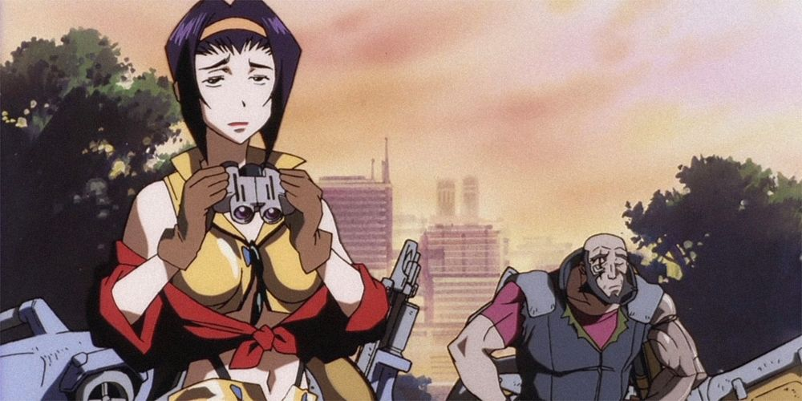
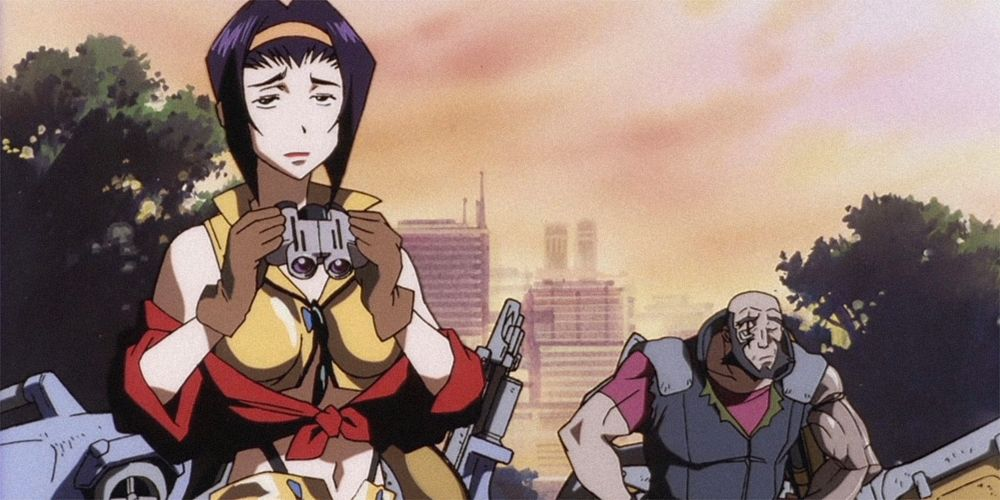
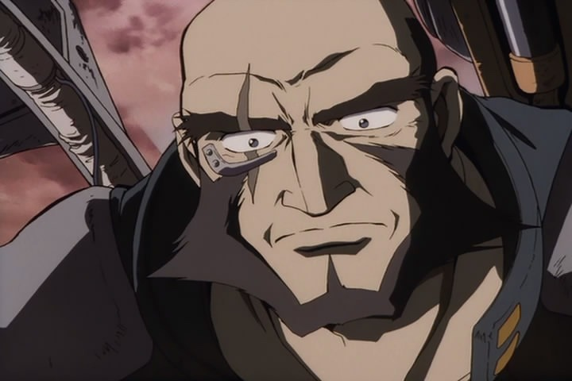
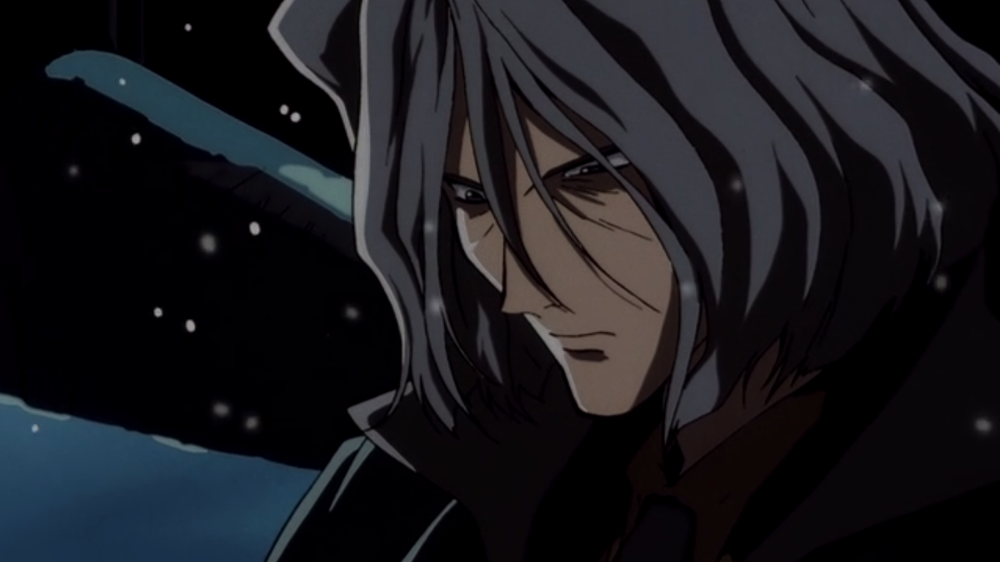
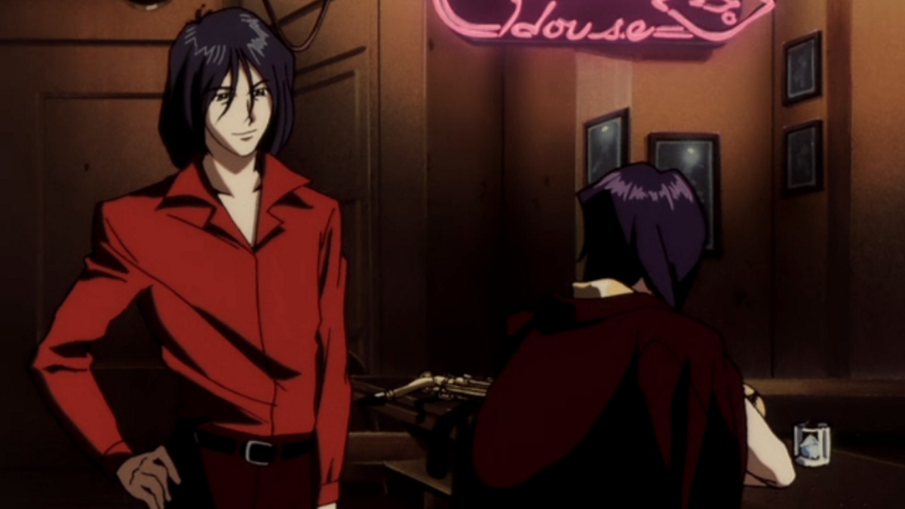
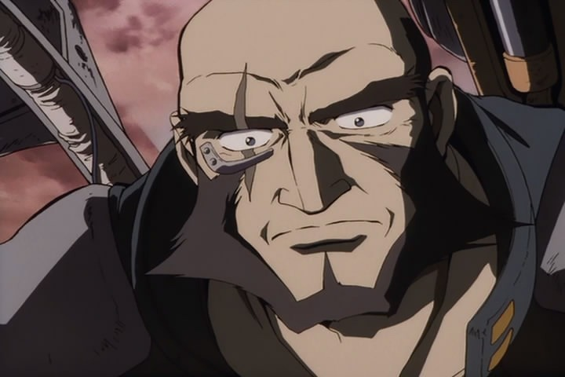
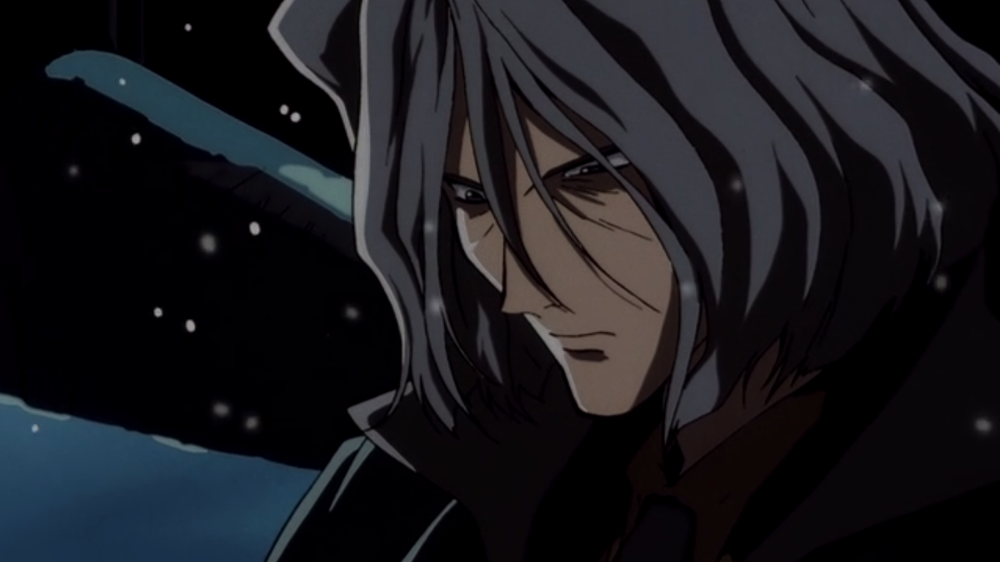
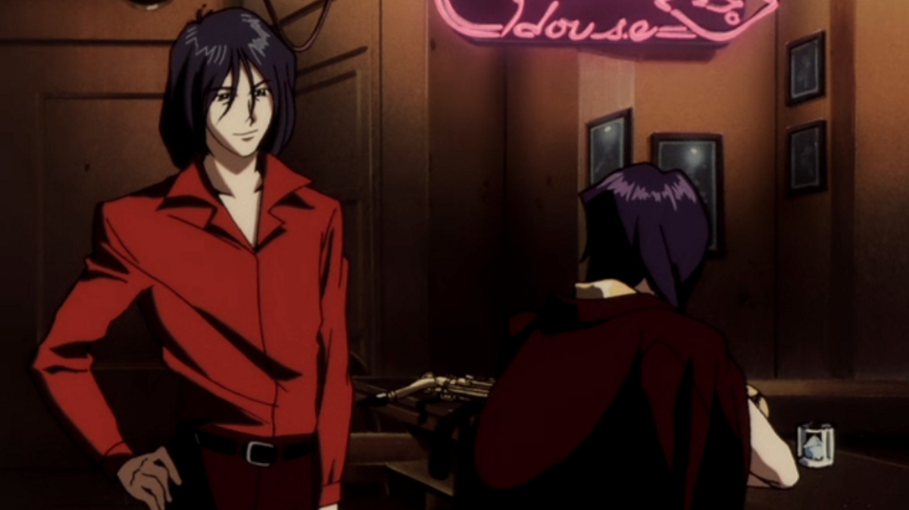
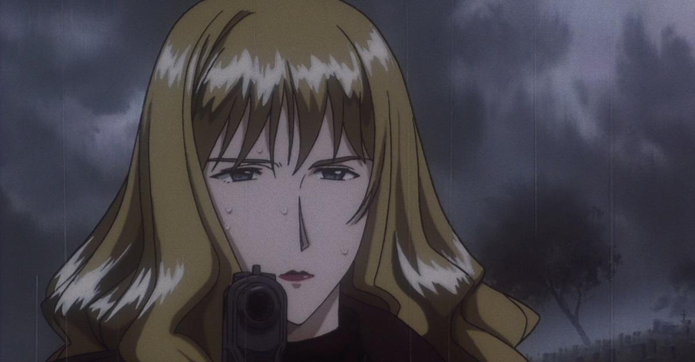
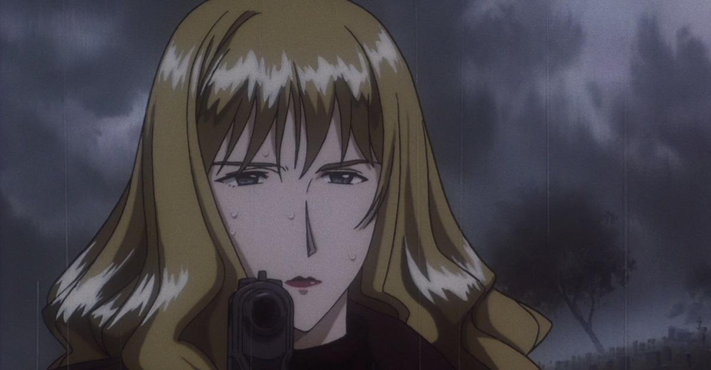

Cowboy Bebop(1998)
It is the Taisho Period in Japan. Tanjiro, a kindhearted boy who sells charcoal for a living, finds his family slaughtered by a demon. Only his younger sister have survived. But, unfortunately, she turned into a demon herself. Though devastated by this grim reality, Tanjiro resolves to become a “demon slayer” so that he can turn his sister back into a human, and kill the demon that massacred his family.
Cruelty |
|||
|---|---|---|---|
Trainer Sakonji Urokodaki |
|||
Sabito and Makamo |
|||
Final Selection |
|||
My Own Steel |
|||
Swordsman Accompaying a Demon |
|||
Muzan Kibutsuji |
|||
The Smell of Enchanting Blood |
|||
Temari Demon and Arrow Demon |
|||
Together Forever |
|||
Tsuzumi Mansion |
|||
The Boar Bares Its Fangs; Zenitsu Sleeps |
|||
Something More Important Than Life |
|||
The House With The Wisteria Family Crest |
|||
Mount Natagumo |
|||
Letting Someone Else Go First |
|||
You Must Master a Single Thing |
|||
A Forged Bond |
|||
Hinokami |
|||
Pretend Family |
|||
Againts Corps Rules |
|||
Master of The Mansion |
|||
Hashira Meeting |
|||
Rehabilitation Training |
|||
Tsuguko, Kanayo Tsuyuri |
|||
New Mission |
 

 





 
